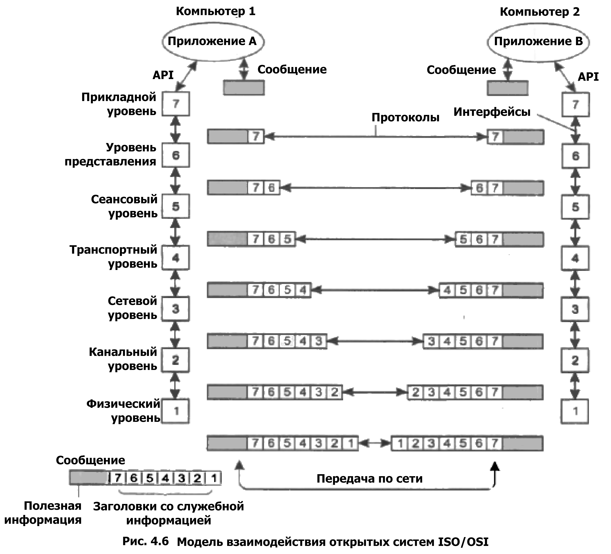

Семь уровней сетевой модели OSI:
Модель OSI
| Уровень | Тип данных | Основные функции | Примеры протоколов |
|---|---|---|---|
| 7.Прикладной уровень | Данные | Взаимодействие с пользователем, доступ к сетевым службам | POP3, HTTP, SMTP |
| 6.Уровень представления | Данные | Преобразование и представление файлов | ASCII, JPEG |
| 5.Сеансовый уровень | Данные | Управление сеансами связи | SCP, PAP |
| 4.Транспортный уровень | Сегменты, дейтаграммы | Прямая связь между конечными пунктами и надежность | TCP, UDP, SCTP |
| 3.Сетевой уровень | Пакеты | Определение маршрута и логическая адресация | IPv4, IPv6 |
| 2.Канальный уровень | Кадры | Физическая адресация | IEEE 802.2, Ethernet |
| 1.Физический уровень | Биты | Работа со средой передачи, сигналами и двоичными данными | Провод |
1.Прикладной уровень - SMTP, HTTP, FTP, SSH
2.Транспортный уровень - TCP, UDP
3.Сетевой уровень - ICMP, IGMP
4.Канальный уровень - Ethernet, IEEE 802